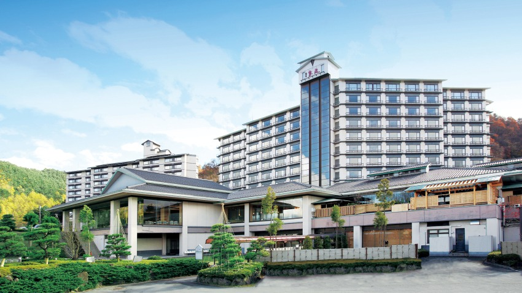
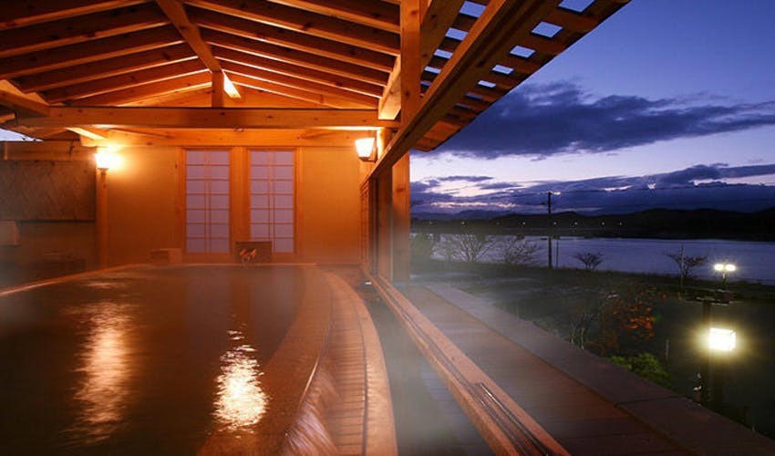

ホテル紫苑


どのお部屋からも岩手山と御所湖が眺望できる宿。24時間いつでも入浴可能。大きな窓から
刻々と表情を変える景色を眺めながら湯浴みを愉しめる。大浴場の続きには岩場を配した
露天風呂が設けられ、湖畔の風がとても気持ちよい。夕食は板前が真心を込めて仕上げた
地元の旬の味覚が満載。じっくりと贅沢な味わいを堪能したい逸品だ。周辺には小岩井農場、
手づくり村、田沢湖などがあり観光の拠点にも適している。
観光情報
ジャンル
温泉・宿
所在地
岩手県盛岡市繋字湯の舘７４－２
電話番号
019-689-2288
[アクセス経路]
【車14分】盛岡IC → 宿
【バス45分】盛岡駅（岩手県交通バス／繋・鶯宿線）→ 宿